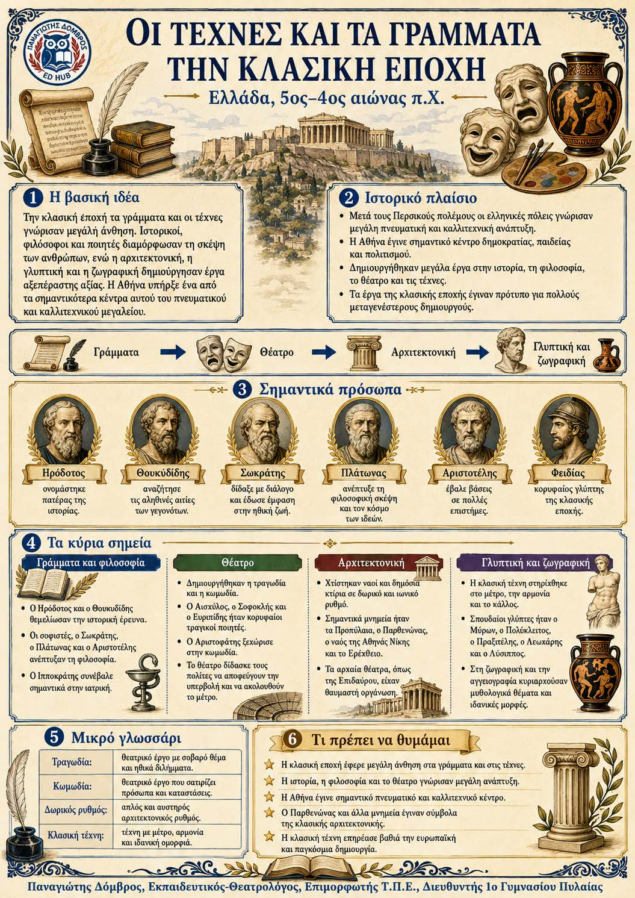

Πληροφοριογράφημα ενότητας
Το πληροφοριογράφημα αυτής της ενότητας δεν έχει ανέβει ακόμη. Οι σημειώσεις παραμένουν πλήρως διαθέσιμες.

Ελλάδα, 479–332 π.Χ.
Στην κλασική εποχή άνθισαν τα γράμματα, το θέατρο και οι τέχνες, με σημαντικότερο κέντρο την Αθήνα. Οι ιστορικοί αναζήτησαν τις αιτίες των γεγονότων και οι φιλόσοφοι μελέτησαν τον άνθρωπο. Οι καλλιτέχνες δημιούργησαν έργα με μέτρο, αρμονία και κάλλος. Η κλασική δημιουργία επηρέασε τη σκέψη και την τέχνη για πολλούς αιώνες.
